BIOMOD 2026 / aQtSOME / EXPERIMENTAL WORK
Experiment.
From molecular components to GUV membrane deformation.
We experimentally evaluated three modules: MscL membrane insertion, Ca²⁺/calmodulin-dependent INF2 activity, and actin-driven GUV membrane deformation. These modules were tested separately; functional coupling of the complete system remains to be demonstrated.
MODULE-LEVEL RESULTS FULL-SYSTEM INTEGRATION PENDING
MscL
1-1. Expression and membrane insertion of MscL
Purpose of this experiment
MscL is a mechanosensitive channel that opens in response to membrane tension. On a liposome membrane, it allows Ca²⁺ to flow into the liposome. MscL is therefore the starting point of our system. In this section, MscL-GFP was synthesized in two cell-free expression systems and tested for insertion into liposome membranes.
Two systems were used: a wheat germ extract system (WEPRO7240 Core Kit) and an E. coli extract system ("Musaibokun N Mini"). The two systems differ in the origin of the translation machinery and in the reaction format.
Wheat germ extract system: a eukaryotic translation system. Transcription by SP6 RNA polymerase and translation are performed as separate reactions. Translation uses the bilayer method. The translation mixture (wheat germ extract, transcript, and creatine kinase) forms the lower layer, and the substrate solution (SUB-AMIX SGC) is layered on top. Substrates diffuse from the upper layer into the lower layer. This supply sustains a long, low-temperature reaction at 15 ℃ for 20 h.
E. coli extract system: a prokaryotic translation system. Transcription by T7 RNA polymerase is coupled to translation in a single reaction mixture. Synthesis is complete after one reaction at 30 ℃ for 90 min. The template DNA requires a T7 promoter, a T7 terminator, and a ribosome binding site (RBS).
The wheat germ system proceeds slowly at low temperature. Such conditions are expected to suppress aggregation of proteins that fold slowly, including membrane proteins. The two systems were therefore compared for yield, aggregation, and insertion into liposome membranes.
Materials and Methods
Plasmid
pET19b-EcMscL-TEV-mEGFP (Addgene) was used. The calculated molecular weight of MscL-GFP is 17,981.83 Da for the monomer and 89,909.15 Da for the pentamer.
Cell-free synthesis of MscL-GFP
E. coli extract system: the Cell-Free Protein Expression Kit "Musaibokun N Mini" was used. The reaction premix (E. coli extract, T7 RNA polymerase, tRNA, NTPs, 20 amino acids, creatine kinase, and creatine phosphate) was added at 80 %(v/v), and template DNA was added to 1–10 ng/μL. The mixture was incubated at 30 ℃ for 90 min and then held on ice for 5 min to stop the reaction.
Wheat germ extract system: the WEPRO7240 Core Kit (CellFree Sciences Co., Ltd.) was used. Transcription with SP6 RNA polymerase was performed at 37 ℃ for 6 h, followed by translation by the bilayer method at 15 ℃ for 20 h. The reaction compositions are given in 2-1.
The products were evaluated by GFP fluorescence under a fluorescence microscope and by SDS-PAGE with CBB staining.
Lipid-in-oil phase
Chloroform and methanol were mixed at 9:1 (hereafter CM solvent). A DOPC–DOPS mixture was dissolved in the CM solvent and diluted with salada oil (Nisshin). The lipid concentration in the oil phase was 1 mM.
Table 1. Composition of the inner buffer
| Material | Final conc. |
|---|---|
| Sucrose | 1 M |
| HKEM | 1× |
| ATTO565 (fluorescent dye) | 1/15 volume of a 50-fold dilution |
See the Appendix for the composition of HKEM.
Table 2. Composition of the outer buffer
| Material | Final conc. |
|---|---|
| Glucose | 1 M |
| HKEM | 1× |
See the Appendix for the composition of HKEM.
Preparation of liposomes by the droplet transfer method
Liposomes were prepared by the droplet transfer method, also called the centrifugation–sedimentation method. In this method, a water-in-oil (W/O) emulsion is first formed in a lipid-containing oil phase, so that a lipid monolayer assembles at the droplet surface. The emulsion is then centrifuged through an oil–water interface that carries a second lipid monolayer. As each droplet passes the interface, it acquires the outer leaflet and becomes a unilamellar liposome (Fig. 1). The method allows the inner and outer leaflets to be prepared from different lipid compositions, and it encapsulates proteins efficiently (Membranes 2023, 13, 440).
The lipid-in-oil phase was added to the inner buffer at about 13 volumes. The tube was pressed against a tube rack and slid to apply vibration, which emulsified the mixture and formed a W/O emulsion.
In a separate tube, an equal volume of the lipid-in-oil phase was layered over the outer buffer.
The emulsion was gently placed on the oil layer of step 2 without mixing, and centrifuged at 5,000 rpm for 2 min.
The supernatant (oil phase) was removed. A small volume of solution was left at the bottom and pipetted to obtain the liposome suspension.
The suspension was introduced into a flow cell and observed under a fluorescence microscope.
Membrane insertion of MscL-GFP
MscL-GFP was added to the liposome suspension at 1/6 volume (liposome 5 : MscL-GFP 1). The mixture was introduced into a flow cell and observed under a fluorescence microscope. The same protocol was used for MscL-GFP from both systems, with only the added MscL-GFP replaced.
Flow cell
For observation, a flow cell measuring 2 mm × 10 mm × 0.05 mm (width × length × height) was used. It was assembled from a 10 mm × 10 mm coverslip and a 24 mm × 60 mm mPEG(5k)-silane-modified coverslip (Marinefeld), with double-sided tape as the spacer. Polyethylene glycol (PEG)-silanized glass coverslips were prepared according to previously described protocols (Inoue et al., 2019). The PEG is covalently bound to the glass rather than coated on it.
Microscopy and Image Acquisition
Liposomes were visualized using highly inclined and laminated optical sheet (HILO) microscopy (Nikon Ti2-E; customized by ReLIEF, Optoline Inc.). This system was equipped with a Nikon 60× Plan Apo TIRF oil-immersion objective (N.A. 1.49), customized filter sets (custom-designed filter cube: 50/50 mirror (Chroma), BA606/55; Nikon-FITC filter cube: EX480/30, DM505, BA535/45), and a solid-state laser light source (Skyra, Cobolt). Images and time-lapse movies were acquired using an sCMOS camera (Zyla 5.5; Andor Technology) controlled by Nikon NIS-Elements AR software.
Results
For the E. coli extract system, a band was detected near the calculated molecular weight of the monomer (Fig. 2). This confirmed that MscL-GFP was synthesized. Under the fluorescence microscope, however, the green fluorescence was distributed as granular aggregates, and no uniform dispersion was observed (Fig. 3).
For the wheat germ extract system, no clear band was detected by SDS-PAGE with CBB staining (Fig. 4), but green fluorescence without aggregation was observed (Fig. 5). MscL-GFP was therefore judged to be synthesized, although the yield was below the detection limit of CBB staining.
After mixing with liposomes, MscL-GFP from the E. coli extract system showed no localization on the liposome membrane. The green fluorescence remained outside the membrane as aggregates (Fig. 6). In contrast, MscL-GFP from the wheat germ extract system gave green fluorescence along the liposome membrane, which indicates insertion into the membrane (Fig. 7).
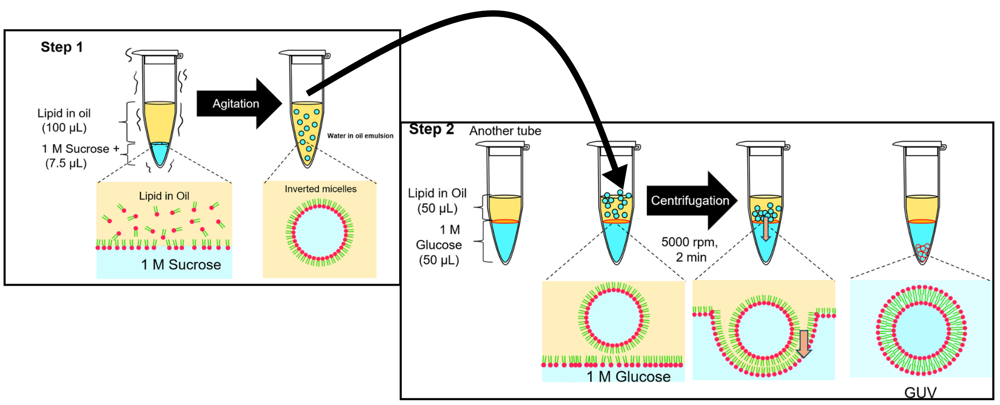
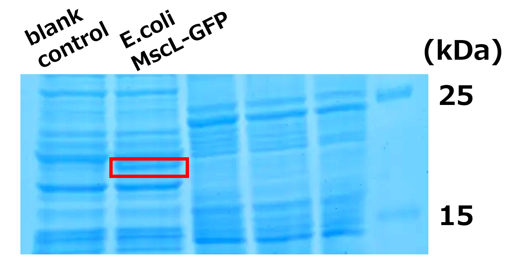
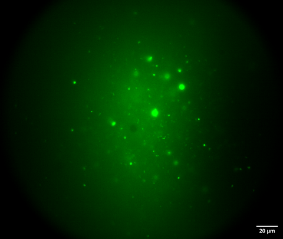
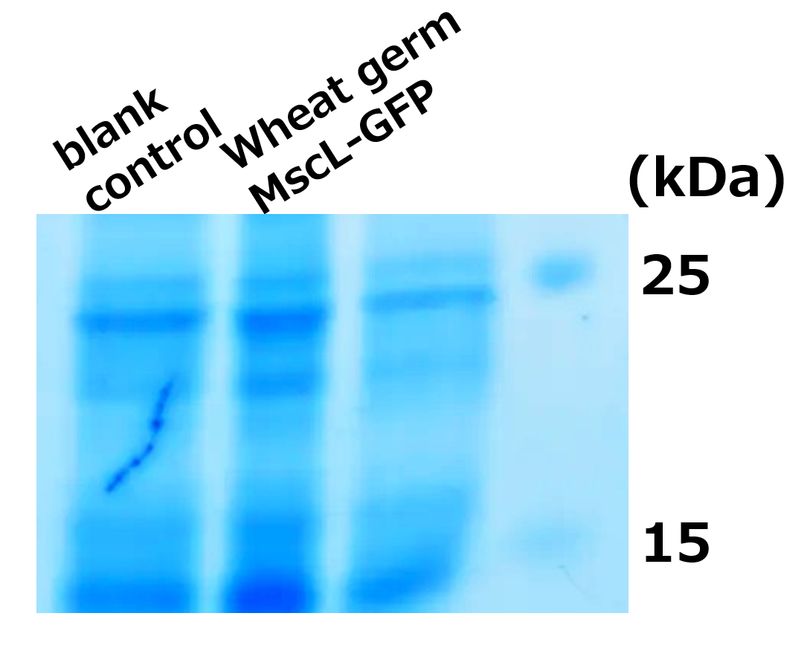
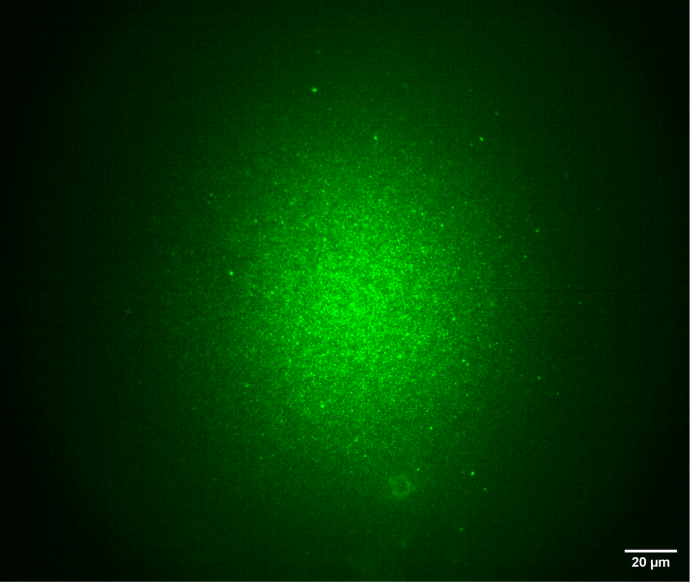
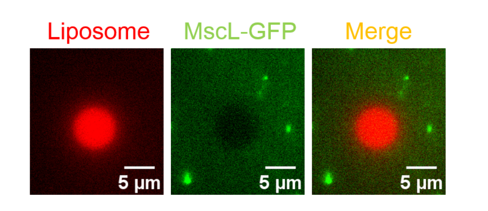
Green fluorescence of MscL-GFP was obtained in both systems. Insertion into the liposome membrane, however, was confirmed only for the wheat germ extract system (Fig. 6, Fig. 7). In our construct, mEGFP is fused to the C terminus of MscL. Fluorescence of mEGFP depends on correct folding of the N-terminal fusion partner (Jacobs et al., 2019). The presence or absence of fluorescence therefore cannot explain the difference in insertion. The difference is more likely to lie in the quality of the MscL structure itself, that is, in how completely it folded. The granular fluorescence observed in the E. coli extract system (Fig. 3) suggests that the GFP moiety folded while the MscL moiety aggregated with its hydrophobic surface exposed.
One possible cause is that endogenous membrane components in the wheat germ extract assisted cotranslational folding. Jacobs et al. showed that adding DOPC vesicles to a cell-free reaction increased GFP fluorescence of MscL-GFP up to sevenfold. They also showed that misfolded protein was not rescued when vesicles were added after synthesis, and concluded that membranes act as cotranslational chaperones (Jacobs et al., 2019). In our experiments, liposomes were added after synthesis in both systems, which is unfavorable in this respect. Insertion was nevertheless obtained in the wheat germ extract system. This supports the idea that microsomal membranes remaining in the extract served as a scaffold during translation. The low reaction temperature of 15 ℃ and the long reaction time of 20 h may also have allowed more time for the hydrophobic regions to fold.
In the wheat germ extract system, insertion was observed even though no band was detected by SDS-PAGE (Fig. 4, Fig. 7). The yield was below the detection limit of CBB staining, but the molecules obtained were correctly folded. The two systems can thus be summarized as "high yield with incomplete folding" and "low yield with good folding". For this reason, the concentration of MscL, and that of INF2 synthesized in the E. coli system, were estimated from fluorescence intensity rather than from CBB staining.
Three issues remain. First, we have not confirmed whether MscL forms a functional channel as a homopentamer. Second, supplying membranes during synthesis appears to be an effective strategy, and E. coli cell-free synthesis in the presence of SUVs is being tested. Third, a more direct approach has been reported in which cell-free synthesis is performed inside liposomes so that MscL is inserted cotranslationally (Majumder et al., 2017). This approach is worth considering for the final form of our system.
INF2
2-1. Control of INF2 activity
Purpose of this experiment
INF2 is activated by Ca²⁺/calmodulin (CaM) and is therefore suitable for controlling actin polymerization inside a liposome. INF2 synthesized in a cell-free system was dialyzed to a Ca²⁺-free state. Actin polymerization activity was then observed by Total Internal Reflection Fluorescence (TIRF) microscopy with and without Ca²⁺ to test whether the activity can be switched.
Materials and Methods
Synthesis of INF2 in the wheat germ cell-free system
The plasmid pEU-EvPH-His8-EGFP-TEV-GGS-hINF2 was used. The product is an EvPH–His8–EGFP–TEV–GGS–hINF2 fusion protein with a calculated molecular weight of 363,975.7 Da as a dimer. Synthesis was performed with the WEPRO7240 Core Kit (CellFree Sciences Co., Ltd.).
Table 3. Composition of the transcription reaction
| Material | Final conc. |
|---|---|
| Transcription Buffer LM | 1× |
| NTP Mix | 2.5 mM |
| RNase Inhibitor | 1 U/μL |
| SP6 RNA Polymerase | 1 U/μL |
| Plasmid (circular DNA) | about 100 ng/μL |
Table 4. Composition of the translation reaction
| Material | Final conc. |
|---|---|
| Transcription reaction mix | 1/2 volume |
| Creatine kinase | 40 ng/μL |
| WEPRO7240 extract | 120 OD/mL |
| SUB-AMIX SGC | 1× |
Transcription with SP6 RNA polymerase was performed at 37 ℃ for 6 h. Translation followed by the bilayer method, with the translation mixture as the lower layer and 1× SUB-AMIX SGC as the upper layer, at 15 ℃ for 20 h. The product was checked by SDS-PAGE with CBB staining (Fig. 8) and by GFP fluorescence under the microscope (Fig. 9). After the synthesis had been confirmed, the sample was dialyzed to remove Ca²⁺ as described below.
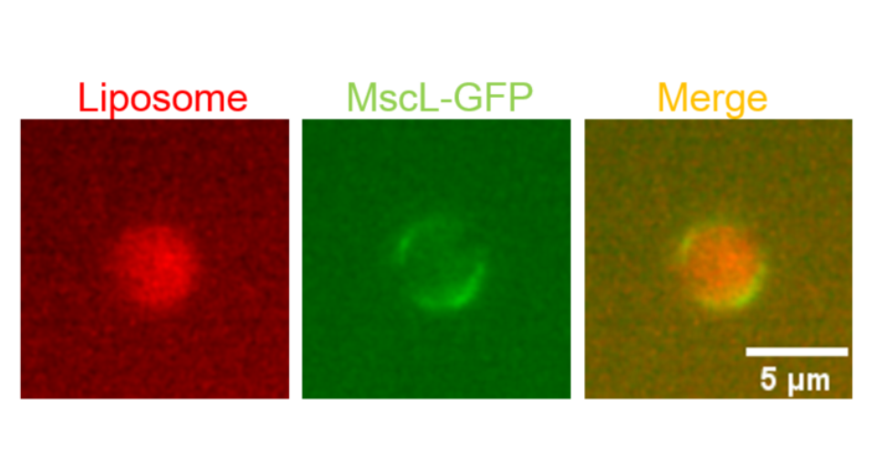
Removal of Ca²⁺ from INF2 by dialysis
Dialysis was performed in two steps with an Xpress Micro Dialyzer MD300.
The sample was dialyzed against 1× HKM + 5 mM EGTA for about 3 h, with one buffer exchange, to chelate and remove Ca²⁺.
The sample was then dialyzed against 1× HKM without EGTA to remove EGTA.
Dialysis was carried out with stirring on a magnetic stirrer at 430 rpm.
Preparation of Ca²⁺-free actin by dialysis
Unlabeled actin and ATTO565-labeled actin were mixed at the ratio shown in Table 5. The mixture was loaded into an Xpress Micro Dialyzer MD100 and dialyzed against 1× G-buffer (Ca free) for one day. The dialyzed actin retained polymerization activity even after freezing and storage.
Table 5. Preparation of Ca²⁺-free actin (−Ca²⁺ actin)
| Material | Final conc. |
|---|---|
| Unlabeled actin | 22.6 μM |
| ATTO565-labeled actin (40.5 % labeling) | 7.4 μM |
| G-buffer (Ca free) | — |
| Total actin | 30 μM |
Total Internal Reflection Fluorescence (TIRF) microscopy
In Total Internal Reflection Fluorescence (TIRF) microscopy, the excitation light is totally reflected at the interface between the coverslip and the solution. The resulting evanescent field extends only about 100 nm from the interface and excites fluorophores within this region. Background from free fluorophores in solution is therefore suppressed. Single actin filaments growing near the glass surface can be observed with a high signal-to-noise ratio.
For observation, a flow cell measuring 2 mm × 10 mm × 0.05 mm (width × length × height) was used, prepared as described in 1-1. Actin polymerizes rapidly, so each reaction mixture was introduced into the flow cell immediately after preparation and observation was started at once.
Capping protein and profilin
CP (capping protein) binds the barbed end of an actin filament and blocks further elongation. HP (human profilin) binds actin monomers, suppresses spontaneous nucleation and pointed-end elongation, and at the same time supports formin-mediated elongation. Both proteins were included so that actin does not polymerize on its own. Under these conditions, filament formation reports the nucleation activity of INF2, and the low level of polymerization in the OFF state reflects the suppression of spontaneous nucleation by CP and HP.
Pre-incubation
For the +Ca²⁺ condition, CaCl₂ and CaM were added to the dialyzed INF2 to give the composition in Table 6. The mixture was pre-incubated at room temperature for 10 min. For the −Ca²⁺ condition, the dialyzed INF2 was added directly to the reaction mixture without pre-incubation.
Table 6. Composition of the pre-incubation mixture (+Ca²⁺ condition)
| Material | Final conc. |
|---|---|
| CaCl₂ | 50 nM |
| CaM | 187.5 nM |
Table 7. Composition of the TIRF reaction mixture
| Material | Final conc. |
|---|---|
| HKM (HKEM for the −Ca²⁺ condition) | 1× |
| Glucose | 50 mM |
| Glucose oxidase (GOD) | 1 U/mL |
| Catalase (CAT) | 100 U/mL |
| ATP | 1 mM |
| DTT | 10 mM |
| Methylcellulose (MC) | 0.556 % |
| GFP-INF2 | 30 nM |
| CP (capping protein) | 140 nM |
| HP (human profilin) | 3 μM |
| Actin (−Ca²⁺) | 1 μM |
HKM and HKEM differ in that HKEM contains EGTA whereas HKM does not. See the Appendix for both compositions.
Control without INF2
An equal volume of wheat germ extract was added in place of INF2. All other components were as in Table 7.
Results
A band for INF2-GFP was detected by SDS-PAGE with CBB staining before dialysis (Fig. 8), and GFP fluorescence was observed under the microscope (Fig. 9). The synthesis of INF2-GFP was therefore confirmed. This sample was then dialyzed to remove Ca²⁺ and used in the assays below.
In the TIRF observation, elongation of actin filaments was seen across the field under the +Ca²⁺ condition (Fig. 10, center). When single filaments were followed, actin elongated from green puncta of EvPH-GFP-INF2 (Fig. 11). Under the −Ca²⁺ condition (Fig. 10, right) and in the control without INF2 (Fig. 10, left), polymerization remained at a low level.
The time course of fluorescence intensity showed the same trend. Only the +Ca²⁺ condition increased monotonically throughout the observation, and differed clearly from the other two conditions (Fig. 12).
These results indicate that INF2 is kept inactive after Ca²⁺ removal by dialysis, and that its actin nucleation activity is restored by the addition of Ca²⁺/CaM.
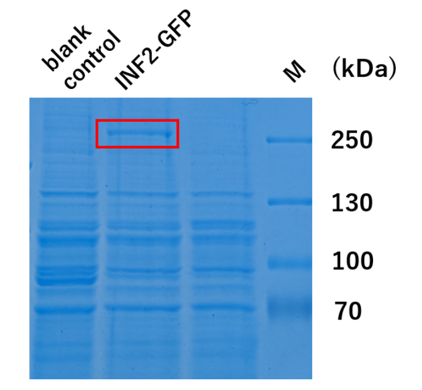
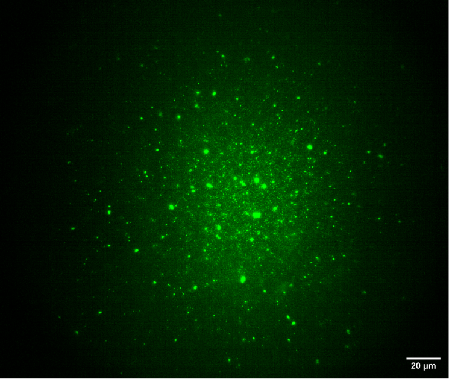

The conditions in this section were based on the report by Lee et al., who analyzed Ca²⁺/CaM-dependent regulation of INF2 in a cell-free system (Lee et al., 2026). They varied the free Ca²⁺ concentration in the presence of 1 μM CaM and obtained an EC50 of 240 nM for activation, with a Hill coefficient of 8.9. This steep response reflects the cooperativity of the four Ca²⁺ binding sites of CaM. It means that INF2 activity switches over a nanomolar range of free Ca²⁺. The EC50 for CaM itself was 9.1 nM in the presence of 1 μM Ca²⁺, so the 187.5 nM CaM used here is in the saturating range. The CaCl₂ added here was 50 nM, which is below the EC50 of 240 nM reported by Lee et al. A large Hill coefficient makes the response near the threshold highly sensitive. The weaker activity of the ON state compared with the positive control (constitutively active INF2) can therefore be explained first by a Ca²⁺ concentration that lies on the rising part of the curve.
The incomplete suppression in the OFF state is also consistent with the findings of Lee et al. They showed that inactivation of INF2 requires buffering of actin monomers by profilin or thymosin, and that CAP proteins are not required. Importantly, profilin alone gives only partial inhibition. The IC50 of thymosin alone was 1.4 μM, whereas it fell to 0.6 μM when 2 μM profilin was also present. Raising capping protein, thymosin, and profilin to 1.5–2 times the actin concentration gave complete inhibition, and activation by Ca²⁺/CaM was still retained under those conditions. Our conditions contained capping protein (140 nM) and profilin (3 μM) but no thymosin. Since thymosin is the component with the strongest effect on INF2 inhibition, the incomplete OFF state is an expected result.
Two directions are proposed for optimizing the activity control. First, the free Ca²⁺ concentration should be defined with an EGTA/Ca²⁺ buffer, and the ON and OFF states should be set on either side of the EC50 of 240 nM reported by Lee et al. In this work the concentration was controlled only by the amount of CaCl₂ added, so contaminating Ca²⁺ in the buffers and Ca²⁺ carried over from the protein solutions were not taken into account. Second, thymosin should be included to deepen the OFF state.
Integration of GUVs with the actin polymerization system
3-1. Binding of the EvPH domain to the GUV membrane
Purpose of this experiment
The INF2 used in this work carries an EvPH domain fused to its N terminus. This experiment tested whether the EvPH domain binds to a GUV membrane containing the acidic phospholipid DOPS and localizes INF2 on the membrane.
Materials and Methods
Preparation of the template DNA by PCR
A linear DNA template for expression in the E. coli cell-free system was prepared by PCR. The forward primer adds a T7 promoter and a ribosome binding site to the INF2 coding sequence.
INF2 coding sequence — PCR primers
GAAATTAATACGACTCACTATAGGGAGACCACAACGGTTTCCCTCTAGAAATAATTTTGTTTAACTTTAAGAAGGAGATATACCAATGGCGTTCGTGAAAAGCGGTCACTTGGCCTTGGGCCTGGSynthesis of INF2 in the E. coli cell-free system
Template DNA and sterile distilled water were each added at 1/10 of the total volume to the reaction premix of the Cell-Free Protein Expression Kit "Musaibokun N Mini". Synthesis was performed under the same conditions as in 1-1 (30 ℃, 90 min). The product was checked by SDS-PAGE with CBB staining (Fig. 13).

Table 8. Membrane lipid composition of the GUVs (concentrations in the oil phase)
| Use | Lipid composition | Final conc. |
|---|---|---|
| Inner aqueous phase (for emulsion) | DOPC : DOPS = 7 : 3 | 2 mM |
| Outer aqueous phase (for layering) | DOPC | 2 mM |
The lipids were dissolved in CM solvent (chloroform : methanol = 9:1) and diluted with salada oil (Nisshin).
Table 9. Composition of the inner buffer
| Material | Final conc. |
|---|---|
| Sucrose | 250 mM |
| HKM | 1× |
| zdk1-mCherry (inner phase marker) | 1/15 volume |
Table 10. Composition of the outer buffer
| Material | Final conc. |
|---|---|
| Glucose | 250 mM |
| HKM | 5× |
HKM was prepared at 5× so that it becomes 1× when the outer buffer is mixed with the protein solution in the binding assay below. See the Appendix for the composition of HKM.
Preparation of GUVs
GUVs were prepared by the droplet transfer method described in 1-1, with the following differences.
The lipid-in-oil phase (DOPC) was layered over the outer buffer at about 3.3 volumes and left for 30 min.
The lipid-in-oil phase (DOPC : DOPS = 7 : 3) was added to the inner buffer at about 33 volumes. Vibration was applied three times in the same direction to form the emulsion.
The whole emulsion was transferred onto the oil phase above the outer buffer and centrifuged at 7,000 rpm for 2 min.
The oil phase was removed carefully. The pipette tip was kept from touching the aqueous phase.
The supernatant was removed down to 2 mm from the bottom of the microtube, and the remaining solution was pipetted. When reducing the aqueous phase, only the surface was aspirated so that the tip did not touch the bottom.
Binding assay
INF2 from the E. coli cell-free system was diluted in the outer buffer and mixed with an equal volume of the GUV suspension, giving 40 nM INF2 and 1× outer buffer. The mixture was left at room temperature for 10 min and then observed. Observation used highly inclined and laminated optical sheet (HILO) illumination, as described in 1-1. Sections 3-2 and 3-3 were also observed by HILO.
Results
GUVs containing DOPS were mixed with INF2-GFP, left for 10 min, and observed by HILO. Green fluorescence of INF2-GFP was distributed as a ring along the outer edge of the GUVs, which were identified by the red fluorescence of the inner phase marker zdk1-mCherry (Fig. 14). In the time-lapse observation, this ring of green fluorescence moved together with the flow of the membrane. No green fluorescence was found in the inner aqueous phase. INF2 was therefore judged to bind to the outer leaflet of the GUV through the EvPH domain.
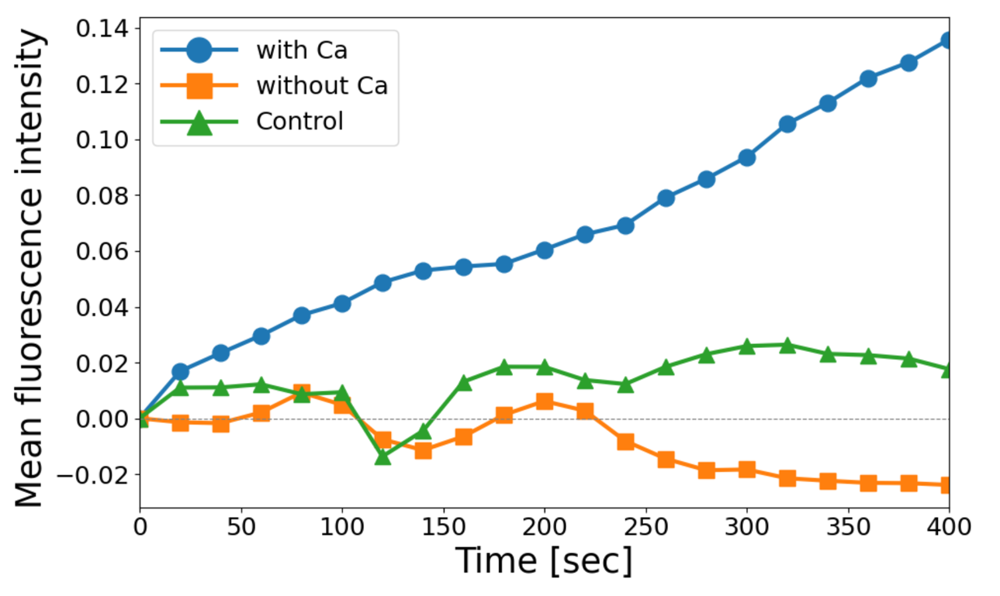
3-2. Actin polymerization activity of INF2 bound to the GUV membrane
Purpose of this experiment
This experiment tested whether INF2 bound to the GUV membrane in 3-1 retains its actin nucleation activity and can drive actin polymerization on the outside of the membrane.
Materials and Methods
Preparation of the GUVs, preparation of INF2 in the E. coli cell-free system, and the binding assay were performed as in 3-1.
Pre-incubation
CaCl₂ (50 nM) and CaM (187.5 nM) were added to the GUV–INF2 complex obtained in 3-1, and the mixture was pre-incubated for 10 min.
Table 11. Composition of the reaction mixture
| Material | Final conc. |
|---|---|
| HKM | 1× |
| Glucose | 50 mM |
| Glucose oxidase (GOD) | 1 U/mL |
| Catalase (CAT) | 100 U/mL |
| ATP | 1 mM |
| DTT | 10 mM |
| Methylcellulose (MC) | 0.556 % |
| CP (capping protein) | 140 nM |
| HP (human profilin) | 3 μM |
| Actin (−Ca²⁺) | 1 μM |
| GUV–INF2 (pre-incubated) | 16.7 vol% of the reaction mixture |
This composition is the TIRF reaction mixture of 2-1 with the INF2 component replaced by the GUV–INF2 complex.
Results
INF2 bound to the GUV membrane was pre-incubated with Ca²⁺/CaM and mixed with the reaction mixture containing actin. Actin filaments elongated from green puncta of EvPH-GFP-INF2 (Fig. 15). In the leftmost field, the filaments extended radially from a single punctum and formed an aster-like structure (Fig. 15, left). This indicates that INF2 bound to the GUV membrane retains its actin nucleation activity.
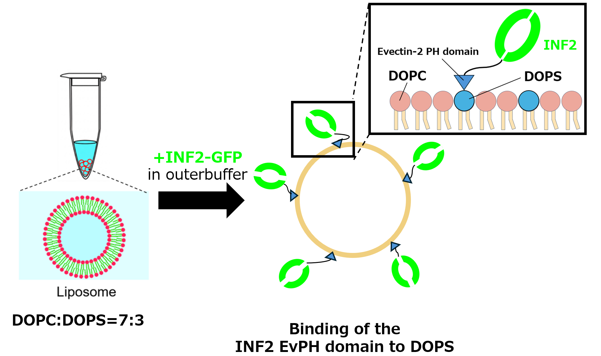
3-3. Encapsulation of the actin polymerization system in GUVs and membrane deformation
Purpose of this experiment
An actin polymerization system containing INF2 and fascin was encapsulated in the inner aqueous phase of GUVs. This experiment tested whether actin polymerization and bundling inside the GUV deform the membrane.
Pre-experiment: actin bundling by fascin
Fascin is an actin-bundling protein. It cross-links actin filaments into tight parallel bundles, which are stiffer than single filaments and can push the membrane outward (Fig. 16). In this work, Fascin-PAmCherry was used. PAmCherry is a photoactivatable variant of mCherry that becomes fluorescent after UV illumination, so the position of fascin can be visualized when required.
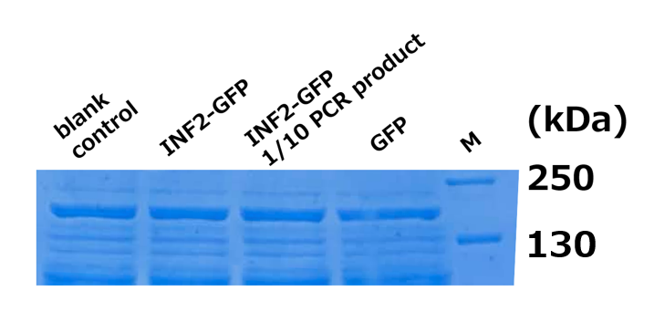
Before the encapsulation experiment, the bundling activity of fascin was checked by TIRF microscopy. Actin filaments were cross-linked into bundles in the presence of fascin (Fig. 17).

Materials and Methods
Table 12. Membrane lipid composition (concentrations in the oil phase)
| Material | Final conc. |
|---|---|
| DMG-PEG2000 | 0.1 mM |
| DOPS | 0.3 mM |
| EGG PC | 0.6 mM |
This composition differs from that used in 3-1 and 3-2. A PEG-modified lipid (DMG-PEG2000) was introduced and the main lipid was changed to EGG PC, in order to prevent nonspecific localization and aggregation of actin on the membrane. DMG-PEG2000 and DOPS were each dissolved in CM solvent and mixed with EGG PC and salada oil (Nisshin) to give the lipid-in-oil phase.
Pre-incubation of INF2
CaCl₂ (50 nM) and CaM (187.5 nM) were added to INF2 from the E. coli cell-free system, and the mixture was pre-incubated.
Table 13. Composition of the inner aqueous phase
| Material | Final conc. |
|---|---|
| Sucrose | 250 mM |
| HKM | 1× |
| Glucose | 50 mM |
| Glucose oxidase (GOD) | 1 U/mL |
| Catalase (CAT) | 100 U/mL |
| ATP | 1 mM |
| DTT | 10 mM |
| Methylcellulose (MC) | 0.556 % |
| Fascin-PAmCherry | 100 nM |
| EvPH-GFP-INF2 (pre-incubated) | 7.3 nM |
| CP (capping protein) | 280 nM |
| HP (human profilin) | 6 μM |
| Actin | 2 μM |
Preparation of GUVs
GUVs were prepared by the droplet transfer method as in 3-1, with the following differences.
The composition and volume of the outer buffer followed 3-1.
The lipid-in-oil phase for layering (outer aqueous phase) was DMG-PEG2000 : EGG PC = 1 : 9.
The outer buffer and the lipid-in-oil phase were left for 15 min.
Evaluation of deformation
Deformation of the GUVs was judged from the images only. No quantitative evaluation was performed.
Results
GUVs encapsulating the actin polymerization system with INF2 and fascin were followed over time. The membrane, which had been spherical, deformed and showed protrusions extending outward (Fig. 18). These results suggest that actin polymerized and bundled in the inner aqueous phase pushed the membrane from inside and deformed the GUV.

The INF2 used in this work carries an EvPH domain fused to its N terminus. Aster-like actin structures formed in a Ca²⁺/CaM-dependent manner in 3-2 (Fig. 15), and the GUVs deformed in 3-3 (Fig. 18). These results show that the ability to be activated and to nucleate actin is retained in the fusion protein. Lee et al., however, reported that the N-terminal (NT) region of INF2 is the CaM binding site and plays an important role in INF2 regulation beyond CaM binding (Lee et al., 2026). They also showed that mutations of hydrophobic or basic residues in the NT region abolish CaM binding. A comparison with INF2 lacking the EvPH fusion would therefore be informative.
The membrane lipid composition involves a trade-off. The EvPH domain requires negative charge for binding, while a high density of acidic lipid also promotes nonspecific adsorption of actin. DOPS was kept at 30 mol% of the total lipid in all three experiments. The concentration range in which both requirements are met remains to be determined, and the amounts of PEG lipid and DOPS should be examined systematically.
Introducing the PEG-modified lipid (DMG-PEG2000) was decisive for this problem. Without DMG-PEG2000, actin localized and aggregated strongly on the membrane as soon as the emulsion formed, and did not disperse into the inner aqueous phase. Lowering the MgCl₂ concentration to 1/10, adding EGTA, and protecting the membrane with BSA all failed to suppress this localization. Actin only dispersed inside the GUV after the main lipid was changed to EGG PC and DMG-PEG2000 was introduced. This suggests that the localization was caused mainly by adsorption of actin to the DOPS membrane itself, rather than by electrostatic bridging through Mg²⁺, and that steric repulsion from the PEG chains shielded this adsorption.
Steric repulsion from PEG chains can also block the target protein from reaching the membrane. Jacobs et al. showed that adding a lipid with a PEG headgroup (DSPE-PEG) reduced the folding and insertion of MscL-GFP into the membrane, depending on the PEG chain length (Jacobs et al., 2019). The amount of DMG-PEG2000 therefore has to be kept in a range that prevents nonspecific adsorption of actin without blocking binding of the EvPH domain.
One further point concerns the asymmetry of the membrane. In 3-3 the lipid composition differs between the inner aqueous phase (DMG-PEG2000 : DOPS : EGG PC) and the outer aqueous phase (DMG-PEG2000 : EGG PC = 1 : 9), so DOPS is designed to be enriched in the inner leaflet. How much asymmetry is actually achieved by the droplet transfer method has not been verified.
Overall Summary
The three modules of the system were tested separately in this work. MscL-GFP was synthesized and inserted into a liposome membrane (01). INF2 was switched between an inactive and an active state by Ca²⁺/CaM (02). INF2 was localized on a GUV membrane through the EvPH domain, retained its nucleation activity there, and deformed a GUV when the polymerization system was encapsulated (03).
Two steps remain before the modules can be connected. First, MscL has not yet been tested as a functional channel. Insertion into the membrane was confirmed, but opening under membrane tension and the resulting Ca²⁺ influx have not been measured. A Ca²⁺ indicator assay under osmotic stress is the next experiment. Second, it is not yet clear whether the Ca²⁺ influx through MscL is sufficient to activate INF2. Lee et al. reported an EC50 of 240 nM free Ca²⁺ with a Hill coefficient of 8.9, so the response is steep and the threshold is narrow. The number of MscL channels per GUV, the open time, and the buffering capacity of the inner aqueous phase all affect whether this threshold is reached. Estimating the Ca²⁺ concentration that can be achieved inside a GUV, and matching it to the activation range of INF2, is the key step toward integrating the full system.
Appendix: Composition of the basic buffers
Table 14. 1× HKM
| Material | Final conc. |
|---|---|
| HEPES (pH 7.5) | 10 mM |
| KCl | 50 mM |
| MgCl₂ | 5 mM |
Table 15. 1× HKEM
| Material | Final conc. |
|---|---|
| HEPES (pH 7.5) | 10 mM |
| KCl | 50 mM |
| EGTA | 1 mM |
| MgCl₂ | 5 mM |
Table 16. 1× G-buffer
| Material | Final conc. |
|---|---|
| Tris-HCl (pH 8.0) | 2 mM |
| ATP | 0.2 mM |
| CaCl₂ | 0.2 mM |
| DTT | 0.5 mM |
Table 17. 1× G-buffer (Ca free)
| Material | Final conc. |
|---|---|
| Tris-HCl (pH 8.0) | 2 mM |
| ATP | 0.2 mM |
| DTT | 0.5 mM |
References
M.L. Jacobs, M.A. Boyd, & N.P. Kamat, Diblock copolymers enhance folding of a mechanosensitive membrane protein during cell-free expression, Proc. Natl. Acad. Sci. U.S.A. 116 (10) 4031-4036, https://doi.org/10.1073/pnas.1814775116 (2019).
Miriam Lee, Aiman Jalmukhambetova, T. Emme Burgin, Henry N. Higgs; Regulation of the formin INF2 by actin monomers and calcium/calmodulin. J Cell Biol 2 February 2026; 225 (2): e202507147. doi: https://doi.org/10.1083/jcb.202507147
Sagardip Majumder, Jonathan Garamella, Ying-Lin Wang, Maxwell DeNies, Vincent Noireaux, Allen P. Liu; Cell-sized mechanosensitive and biosensing compartment programmed with DNA. Chem. Commun. 2017; 53 (53): 7349–7352. https://doi.org/10.1039/c7cc03455e
Inoue, D.; Obino, D.; Pineau, J.; Farina, F.; Gaillard, J.; Guerin, C.; Blanchoin, L.; Lennon-Duménil, A. M.; Théry, M. Actin Filaments Regulate Microtubule Growth at the Centrosome. EMBO J. 2019, 38 (11), e99630.
Droplet transfer (centrifugation–sedimentation) method. Membranes 2023, 13 (4), 440. https://www.mdpi.com/2077-0375/13/4/440